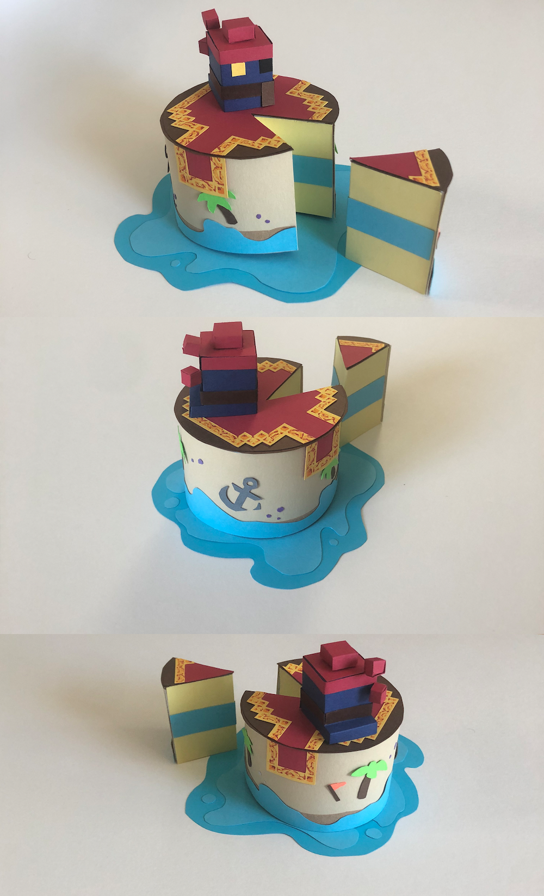

pirate cave cake
I crafted this piece for a Realm of the Mad God cake design contest. The prompt was to design a cake related to the game, in any medium. I chose paper as it would give me an opportunity to make it physical without actually baking a cake. I chose to theme my design around one of the lowest-level (if not the lowest) dungeons, the Pirate Cave. The dungeon consists mostly of sandy-looking land pieces and ships, surrounded by a bright, nearly crystalline water.
I first made a base shape for the cake out of lined paper, then added the colored cardstock on top. I incorporated 3 main parts of the dungeon into the design: the sand/beach, the water, and the boss area. The cake is on top of/surrounded by the water decoration, while the side of the cake is inspired by the beach areas. The top rug, detailed in pen, was inspired by the interior of the boss room. The pirate slurp seen atop the cake is a pet skin drop from the boss. For the "cake" itself, I decided a light, vanilla-like cake with a blue frosting would work well with the decorations.
This cake placed 1st out of 10, and I was pretty satisfied with the product. Having the subject be the Pirate Cave is not too common an occurrence, for either me or other creators in the RotMG community. I think this project helped me appreciate the aesthetics of the Pirate Cave more, as even though it is very low-level content, it still required a lot of work to make (so good job for the artists on that one!). This was another slightly new adventure in paper crafting for me, as I've done some 3D pieces and work, but nothing quite like this.
Colored cardstock, pen; September 2020